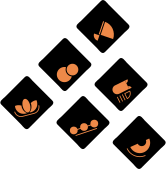
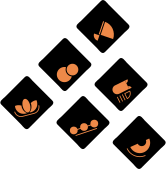

西方透過合成器摸索並驅動一系列肉眼不可見的波形物理，以其背後嚴謹的邏輯關係，創造得以被人們耳朵所聽見的電子音樂。而這種行為上的再物質化，恰如同台灣的北管文化透過層層堆疊的儀式行為，將東方虛擬的神聖世界以象徵化的手法與世俗生活連結，形塑了獨特的台灣民俗文化。
In the Western culture, synthesizers allow users to adopt a series of physical icons to control
invisible waveforms. The rigorous logic behind this is to create electronic music that can be heard by
the human ears. The dematerialization of behavior resembles the ritual acts of Taiwanese Beiguan, which
connects the Eastern sacred world with secular life in a symbolic way and helps shaping the unique
Taiwanese folk culture.


 
